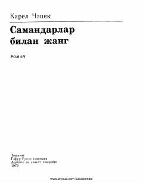

SBInsoniyat va aqlli samandarlar o'rtasidagi ziddiyatli munosabatlar haqidagi mashhur ilmiy-fantastik roman.
Karel Chapekning ushbu mashhur ilmiy-fantastik romani insoniyatning tabiatga va o'ziga o'xshash bo'lmagan mavjudotlarga bo'lgan munosabatini tanqidiy ruhda tasvirlaydi. Asarda dengiz tubida topilgan aqlli samandarlar va ularning insonlar tomonidan ekspluatatsiya qilinishi oqibatida yuzaga kelgan global ijtimoiy-siyosiy inqiroz hikoya qilinadi.